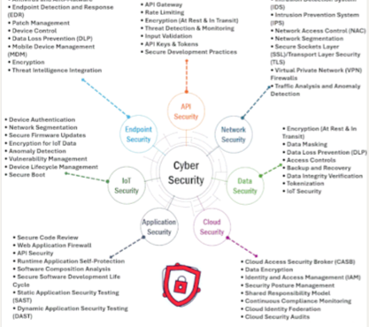

FERPA, HIPAA, and COPPA compliance guidelines. Google Workspace tier breakdowns. Platform security comparisons. Free student monitoring tools.
Before adopting any AI tool in an educational setting, educators must understand the three federal privacy laws that govern student and patient data. Violations can result in loss of federal funding, lawsuits, and serious harm to students.
FERPA protects the privacy of student education records for any institution receiving federal funding. Under FERPA, schools may not disclose personally identifiable information (PII) from education records without written consent of the parent or eligible student (18+).
Key rules for AI use:
HIPAA protects individually identifiable health information (PHI). While HIPAA primarily applies to healthcare providers, it intersects with education when schools provide health services, maintain health records, or when counselors and school psychologists store student health information.
Key rules for AI use:
COPPA restricts the collection of personal information from children under 13 by online services. It requires verifiable parental consent before collecting, using, or disclosing personal information from children under 13.
Key rules for AI use:
Not all Google Workspace tiers include the same AI features. Use this table to identify which tier your institution has and what capabilities are available to you.
| Feature | Education Fundamentals FREE |
Education Plus ~$6/user/yr |
Teaching & Learning Add-on ~$4.80/user/mo |
Google AI Pro for Education $15–$20/user/mo |
|---|---|---|---|---|
| PRICING | ||||
| Cost | Free | ~$6/user/year | ~$4.80/user/month | $15–$20/user/month |
| CORE APPS | ||||
| Gmail, Docs, Slides, Sheets | ✓ | ✓ | ✓ | ✓ |
| Google Classroom | ✓ | ✓ | ✓ | ✓ |
| Google Meet (basic) | ✓ | ✓ | ✓ | ✓ |
| STORAGE | ||||
| Pooled storage | 100 GB pooled | 100 GB/user | 100 GB/user | Unlimited |
| AI & GEMINI | ||||
| Gemini in Docs/Gmail/Slides | ✗ | ✓ | ✓ | ✓ |
| Gemini Advanced (Gemini 1.5 Pro) | ✗ | ✗ | Limited | ✓ |
| Deep Research in Gemini | ✗ | ✗ | ✗ | ✓ |
| Imagen (AI image generation) | ✗ | ✗ | ✗ | ✓ |
| NotebookLM | Free (separate login) | Free (separate login) | Free (separate login) | ✓ integrated |
| AGENTIC AI | ||||
| Workspace Studio / Agent Designer | ✗ | ✗ | ✗ | ✓ (requires IT setup) |
| Gemini Gems (custom agents) | ✗ | ✗ | ✗ | ✓ |
| Google Agentspace integration | ✗ | ✗ | ✗ | Add-on required |
| NOTEBOOKLM LIMITS | ||||
| Sources per notebook | 50 (free account) | 50 (free account) | 50 (free account) | 500 (integrated) |
| Notebooks per account | 100 (free account) | 100 (free account) | 100 (free account) | Expanded |
| CLASSROOM & TEACHING TOOLS | ||||
| Google Classroom (full features) | ✓ | ✓ | ✓ | ✓ |
| Practice Sets (AI-powered) | ✗ | ✓ | ✓ | ✓ |
| AI Rubric Assistant | ✗ | ✗ | ✓ | ✓ |
| GOOGLE MEET CAPACITY | ||||
| Maximum participants | 100 | 500 | 500 | 1,000 |
| Meeting recordings | ✗ | ✓ | ✓ | ✓ |
| AI-generated meeting notes | ✗ | ✗ | ✓ | ✓ |
| SECURITY & ADMIN CONTROLS | ||||
| Admin Console | ✓ | ✓ | ✓ | ✓ |
| Data Loss Prevention (DLP) | ✗ | ✓ | ✓ | ✓ |
| Advanced audit logs | Basic | ✓ Advanced | ✓ Advanced | ✓ Advanced |
| DATA PRIVACY & AI TRAINING POLICIES | ||||
| Student data used to train AI | ✗ Never | ✗ Never | ✗ Never | ✗ Never |
| Admin can disable Gemini | N/A | ✓ | ✓ | ✓ |
| No ads in Workspace | ✓ | ✓ | ✓ | ✓ |
| COMPLIANCE & CERTIFICATIONS | ||||
| FERPA compliant | ✓ | ✓ | ✓ | ✓ |
| COPPA compliant | ✓ (K–12) | ✓ | ✓ | ✓ |
| SOC 2 Type II | ✓ | ✓ | ✓ | ✓ |
| ISO 27001 | ✓ | ✓ | ✓ | ✓ |
| SUPPORT LEVEL | ||||
| Support | Community forums | Enhanced support | Enhanced support | Premium support |
How do the major AI platforms compare on data privacy, security certifications, and suitability for educational use? Use this table when presenting AI adoption proposals to your IT department or administration.
| Category | Google (Workspace Education) | Microsoft (Copilot / M365 Education) | Apple (Education) | Anthropic Claude (Education API) |
|---|---|---|---|---|
| PRODUCT OVERVIEW & PRICING | ||||
| Main AI Product | Gemini + Workspace | Microsoft Copilot + M365 | Apple Intelligence / Siri | Claude (claude.ai / API) |
| Education pricing | Free–$20/user/mo | Free–$6/user/mo (A1–A5) | Free (device-based) | Pro: $20/mo; API pricing |
| DATA STORAGE & HOSTING | ||||
| Data region | US / EU configurable | US / EU configurable | On-device (Private Cloud) | US data centers |
| Data residency controls | ✓ Admin configurable | ✓ Admin configurable | ✓ On-device default | Limited |
| Encryption at rest & transit | ✓ | ✓ | ✓ | ✓ |
| AI MODEL TRAINING | ||||
| Uses your data to train AI | ✗ Never (Edu) | ✗ Never (Edu) | ✗ Never | ✗ Never (paid plans) |
| Opt-out available (free tier) | N/A (Edu never trains) | N/A (Edu never trains) | N/A | Must be on paid plan |
| COMPLIANCE | ||||
| FERPA | ✓ | ✓ | ✓ | Requires enterprise agreement |
| COPPA | ✓ | ✓ | ✓ | Verify current policy |
| HIPAA (if applicable) | ✓ (BAA available) | ✓ (BAA available) | Limited | Not standard; enterprise only |
| GDPR | ✓ | ✓ | ✓ | ✓ |
| SECURITY CERTIFICATIONS | ||||
| SOC 2 Type II | ✓ | ✓ | ✓ | ✓ |
| ISO 27001 | ✓ | ✓ | ✓ | ✓ |
| FedRAMP | ✓ (High) | ✓ (High) | ✗ | ✗ |
| AI CAPABILITIES FOR EDUCATION | ||||
| AI writing assistance | Gemini in Docs/Gmail | Copilot in Word/Outlook | Apple Writing Tools | Claude Chat / Projects |
| Custom agents / bots | Gems / Workspace Studio | Copilot Studio | Siri Shortcuts | Claude Projects / API |
| Knowledge base / RAG | NotebookLM | Copilot Pages | Apple Notes integration | Projects (document upload) |
| ADVERTISING | ||||
| Ads shown to students | ✗ None (Edu) | ✗ None (Edu) | ✗ None | ✗ None |
| Behavioral tracking for ads | ✗ None (Edu) | ✗ None (Edu) | ✗ None | ✗ None |
| SECURITY CONTROLS FOR IT | ||||
| Centralized admin console | ✓ Google Admin | ✓ Entra ID / Intune | ✓ Apple Business Manager | API key management only |
| SSO / MFA support | ✓ | ✓ | ✓ | ✓ |
| Ability to block specific AI features | ✓ | ✓ | ✓ | Limited |
| OVERALL RISK RATING FOR KU IT (K–12) | ||||
| Risk rating | LOW | LOW | LOW | MEDIUM (paid plan required) |
| OVERALL RISK RATING FOR KU IT (University) | ||||
| Risk rating | LOW | LOW | LOW | LOW (with enterprise agreement) |
Recommendations for IT administrators evaluating AI platform deployment across K–12 and university environments.
Best-in-class for K–12 and higher ed due to strong FERPA/COPPA compliance, centralized admin controls, no student advertising, and the ability to disable AI features at the organizational unit level. Education Fundamentals is free. Gemini features require Education Plus or higher. Agentic AI requires Google AI Pro for Education and IT configuration of Workspace Studio.
Strong FERPA/COPPA compliance through A1–A5 licensing. Microsoft Copilot for Education integrates with Word, Teams, and OneNote. Excellent for institutions already standardized on Microsoft. Copilot Studio enables custom agent building. FedRAMP High certified — suitable for sensitive research environments. A1 tier is free for schools.
On-device AI processing through Apple Intelligence provides the strongest privacy posture — student data never leaves the device for most AI features. Apple Business Manager provides centralized management. Best suited for 1:1 iPad or Mac programs. No advertising, no behavioral tracking. Limited agentic capabilities compared to Google or Microsoft.
Claude Pro ($20/mo) is appropriate for individual educator use with no student PII. For institutional deployment with students, require an Enterprise or API agreement with a Data Processing Addendum that addresses FERPA. Claude's free tier should be treated as a consumer product — do not use with student data. Claude Cowork (desktop, paid plan) is appropriate for teacher productivity with non-student data.
Rather than banning AI and fighting a losing battle, these platforms give you visibility into exactly how students are using AI — and help you build the metacognitive skills students need to use it well.
| Platform | What It Monitors | Free Tier Features | Best For |
|---|---|---|---|
| SchoolAI schoolai.com |
Full conversation logs, student engagement patterns, flag keywords and topics | Unlimited students, full logs, conversation review dashboard | K–12 teachers deploying class-wide AI chatbots |
| MagicSchool (MagicStudent) magicschool.ai |
Student prompt logs, frequency of use, tool usage breakdown | Free teacher account; MagicStudent for supervised student AI use | Blended classroom prompting practice with oversight |
| BoodleBox box.boodle.ai |
Full conversation logs, student vs. AI message breakdown, session analytics | Free for educators; conversation archive; COPPA compliant | Higher ed and secondary; open-ended AI literacy projects |
Go to schoolai.com and sign up with your school email. The free tier is fully functional for monitoring.
A "Space" is a monitored AI environment you design for students. Click New Space, give it a name, and write a system prompt defining the AI's role (e.g., "You are a reading coach for 6th grade students...").
Add topics the AI should avoid, keywords to flag, and configure the SafeChat filter. SchoolAI blocks inappropriate content by default.
Copy the student link from your Space. Students access it directly — no account creation required.
Access your teacher dashboard to view all student conversations, session lengths, and flagged messages. Use the logs as formative assessment data.
Go to magicschool.ai and sign up. MagicStudent is the student-facing version with teacher monitoring.
Add students or generate a class code. Students join via the code — no email required for younger students.
Choose which AI tools students can access. Restrict to specific tools aligned with your lesson goals.
Create a Custom Chatbot activity or select from MagicSchool's library. Students interact with the AI around your specific prompt or curriculum.
Access the student activity dashboard to see prompts submitted, frequency of use, and responses received.
Go to box.boodle.ai and create a free educator account. COPPA compliant for K–12.
A "Boodle" is a custom AI environment. Set a system prompt, choose a base model, and configure any document uploads for the knowledge base.
Invite students by email or generate a shareable link. Conversations are automatically logged under your teacher account.
Review the full conversation archive from your dashboard. Each session is timestamped and attributed to the student (or anonymous link user).
Monitoring AI use isn't about catching cheating — it's about understanding how students think. Here are the three highest-value behaviors to observe in student AI logs:
Does the student refine their prompt after receiving an unsatisfactory response? This is the most reliable indicator of AI literacy. A student who sends one prompt and accepts the response passively is at cognitive risk. A student who argues with the AI, challenges its output, or refines their question is developing critical thinking skills. Look for: multiple turns, directional language ("that's not right, try again with..."), and self-correction.
Do students treat AI output as authoritative, or do they attempt to verify claims? Monitor whether students ask the AI for sources, cross-reference with uploaded materials, or flag responses as uncertain. Instructional move: Build a "Verify Before You Trust" step into all AI-assisted assignments.
Cognitive offloading = using AI to bypass thinking entirely (asking it to write the essay). Cognitive scaffolding = using AI to support thinking (asking it to explain a concept, then writing your own response). Conversation logs quickly reveal which is happening. Design your assignments and AI environments to make scaffolding the only possible use case — configure the AI to refuse direct answer delivery and redirect to guiding questions.
| Feature | ChatGPT 4.0 | MagicSchool AI | Khanmigo | Gemini for Education |
|---|---|---|---|---|
| Primary purpose | General AI assistant | Teacher productivity tools | AI tutor for students | AI across Google Workspace |
| FERPA compliant | ✗ | ✓ | ✓ | ✓ |
| Student data used for training | Opt-out required | ✗ Never | ✗ Never | ✗ Never |
| Teacher monitoring dashboard | ✗ | ✓ | ✓ | Via Google Admin |
| Safe for K–12 students | ✗ Not without guardrails | ✓ | ✓ | ✓ (Edu tier) |
| Custom chatbot builder | ✓ (GPT Builder) | ✓ (MagicStudent) | ✗ | ✓ (Gems) |
| Pricing (educator) | $20/mo (Plus) | Free / Pro tier | Free for US teachers | Free–$20/mo (Edu tier) |
| Feature | Goblin Tools | NotebookLM | Suno | Veo (Google) |
|---|---|---|---|---|
| Primary use | Task breakdown & executive function support | AI research assistant from your own documents | AI music generation | AI video generation |
| Best for education | Students with ADHD, anxiety, or executive function challenges | Research synthesis, study guides, audio summaries | Creative projects, music classes, social skills learning | Media production, visual learning, creative arts |
| FERPA risk | Low (no student data required) | Low (Google Edu tier) | Medium (verify policy) | Low (Google Edu tier) |
| Free tier | ✓ Fully free | ✓ Free with Google account | Limited free tier | Education access varies |
| Accessibility value | Very high — designed for neurodivergent support | High — Audio Overview is ideal for auditory learners | High for music & creative expression | High for visual and kinesthetic learners |
| Feature | Mizou | PlayLab.ai | MagicSchool AI |
|---|---|---|---|
| FERPA compliant | ✓ | ✓ | ✓ |
| COPPA compliant (K–8) | ✓ | ✓ | ✓ |
| Student data for AI training | ✗ Never | ✗ Never | ✗ Never |
| Student accounts required | ✗ Link-only access | Org-based access | Class code join |
| Teacher conversation logs | ✓ | App-level analytics | ✓ |
| Advertising to students | ✗ None | ✗ None | ✗ None |
| Custom rubric integration | ✓ (auto-grading) | Via instructions | Via MagicStudent setup |
| Free for teachers | ✓ | ✓ | ✓ |
Table data reflects publicly available compliance documentation as of 2025–2026. Always verify current compliance status directly with each vendor before institutional deployment. Compliance status can change with product updates.
A comprehensive reference for IT departments, administrators, and procurement officers. Every major company in the AI ecosystem — frontier model builders, cloud distributors, hardware providers, and enterprise specialists — with exact data collection practices by tier, regulatory compliance status, AI capability levels, and risk ratings for educational deployment.
| Company / Product | Consumer / Edu Product | Free Tier — Data Collected | Paid / Enterprise — Data Collected | FERPA | COPPA | HIPAA | AI Capabilities & Tiers | IT Risk & Notes |
|---|---|---|---|---|---|---|---|---|
| 🔬 FRONTIER MODEL BUILDERS — Companies building the foundation AI models that power the entire industry | ||||||||
| OpenAI ChatGPT · GPT-4o · o-series |
ChatGPT Free; Plus ($20/mo); Pro ($200/mo); Teams ($30/user/mo); Enterprise; ChatGPT Edu ($5/student/yr) | Conversations (used to train models by default); account data (name, email); IP address; device/browser data; usage patterns; voice clips (voice mode); images submitted; may be reviewed by human trainers | Plus/Pro: conversations opt-out from training by default. Teams: no training on data. Enterprise & Edu: full DPA, conversations NOT used for training, no ads, SSO, admin audit logs, FERPA BAA signed | ✗ Free/Plus ⚠ Enterprise/Edu |
✗ Min age 13; no school exception std. ⚠ ChatGPT Edu only |
✗ Standard ⚠ Enterprise BAA |
Frontier: GPT-4o (text/image/voice/code/video); o1/o3/o4 (advanced reasoning); DALL-E 3 (image gen); Sora (video gen); Codex (code agent). Free: GPT-4o mini. Plus: Full GPT-4o + o-series. Enterprise: All models + fine-tuning + custom GPTs | HIGH Free/Plus — never use with student data. LOW ChatGPT Edu with signed BAA. Min age 13. No FedRAMP. Enterprise requires contract review. Most widely recognized brand in AI. |
| Anthropic Claude · Claude Code · Cowork |
Claude.ai Free; Pro ($20/mo); Max ($100/mo); Team ($30/user/mo); Enterprise; API (direct developer access) | Conversations (free tier may be used to improve Claude; human safety reviewers may access); account info (email); IP address; browser/device metadata; usage patterns and feature engagement | Pro/Max/Team: conversations NOT used for training; usage analytics retained. Enterprise: DPA signed, full audit logs, SSO/MFA, conversations isolated to your tenant, admin controls, no training on org data | ✗ Free/Pro ⚠ Enterprise + DPA |
✗ Min age 13; no school exception on any standard plan |
✗ Standard plans ⚠ Enterprise case-by-case BAA |
Frontier: Claude Opus 4 (reasoning/frontier); Claude 3.7 Sonnet (extended thinking + code); Claude 3.5 Haiku (fast/cheap). Free: Claude 3.5 Haiku limited. Pro/Max: Full access + Projects (persistent memory) + Artifacts. Enterprise: Claude Code (agentic coding), Cowork (file-system agent), API access | HIGH Free tier for student data. MEDIUM Pro acceptable for teacher productivity with zero student PII. LOW Enterprise with DPA. No FedRAMP. Best reasoning models; strong safety focus. Claude Code & Cowork require paid plan. |
| Google / DeepMind Gemini · NotebookLM · Workspace AI |
Gemini Free; Gemini Advanced ($20/mo); Google One AI Premium; Workspace Education Fundamentals (FREE) → AI Pro for Education ($20/user/mo) | Consumer Gemini (free/paid): Conversations; full Google account activity; cross-product behavioral data (Search, YouTube, Maps); usage patterns; may be used to improve Google's consumer models | Workspace Education ALL tiers: student data NEVER used for training; DPA included; no advertising to students; admin controls at org-unit level; FERPA BAA signed. See Workspace Tier table for full breakdown. | ✗ Consumer ✓ Workspace Edu |
✗ Consumer ✓ Workspace Edu K–12 |
⚠ Google Cloud BAA available |
Frontier: Gemini 2.5 Pro (1M–2M token context, multimodal); Gemini 2.5 Flash (fast + efficient); Deep Research; Imagen 3 (image gen); Veo 2 (video gen). Education add-ons: NotebookLM (RAG from your docs); Gems/Workspace Studio (agentic agents); AI Rubric Assistant; Practice Sets; AI meeting notes in Meet | HIGH Consumer Gemini for student data. LOW Workspace Education (all paid tiers FERPA/COPPA compliant; Fundamentals tier is FREE). Highest breadth of education-specific AI features. Best choice for Google-ecosystem institutions. |
| Meta Meta AI · Llama (open-source) |
Meta AI chatbot (free, via Facebook/Instagram/WhatsApp/standalone app); Llama API (developer pay-per-token); open-weight Llama models (self-download, free) | Meta AI consumer: Extensive Facebook/Instagram account data; social graph; behavioral ad-targeting history; public post history; cross-app activity; conversation logs tied to Facebook account; voice interaction data; images shared | Llama API: API usage logs, account info only — conversation content is NOT retained for training by default. Self-hosted Llama (open-weight): Zero data leaves your infrastructure — complete privacy control | ✗ Meta AI consumer ✓ Self-hosted Llama |
✗ Meta AI (Facebook ecosystem; not school-safe) ✓ Self-hosted |
✗ Meta AI ✓ Self-hosted infra |
Open-source: Llama 4 Scout/Maverick/Behemoth (multimodal, reasoning); Llama 3.3 (text, code). Unique advantage: Open weights = download and run locally, fine-tune on your data, deploy on-premises. Most customizable model family. Meta AI consumer: text chat, image gen (Imagine), web search, voice mode. | HIGH Meta AI consumer — deep Facebook data integration. NEVER use with students. LOW Self-hosted Llama on your own FERPA-compliant infrastructure. Requires significant IT/AI expertise to self-host. No consumer education product exists. |
| xAI (Elon Musk) Grok · Aurora · Colossus |
Grok via X (Twitter) Premium ($8–16/mo) or standalone Grok.com (free limited + paid tiers). No education product exists. | X platform account data (public posts, profile, follows, behavioral interactions); conversation history; device/browser info; cross-app activity with X ecosystem. Grok on X uses your full X engagement history to personalize. Public posts may be used for model training. | Grok paid: Same data categories as free; incremental features but same data model. No enterprise education tier, no DPA for education, no BAA. Privacy policy significantly less detailed than peer companies. | ✗ | ✗ X requires 13+; not designed for education |
✗ | Current models: Grok 3 (text + web reasoning, long context); Grok 3 mini (efficient); Aurora (image generation). Key differentiator: Real-time X/Twitter data access; "Think" mode for reasoning; integration with X's trending content. "Unfiltered" mode poses guardrail concerns for educational contexts. | HIGH RISK for any institutional use — X platform data integration, lack of education agreements, unclear privacy policy. Not appropriate for K-12 or university institutional deployment with any student data. Individual educator personal use only. |
| Mistral AI Le Chat · La Plateforme · Open-weight |
Le Chat (consumer chatbot, free); Mistral API (pay-per-token developer access); La Plateforme (enterprise SaaS); open-weight model downloads (free). No dedicated education tier. | Le Chat free: Conversations; account info (email); device/browser data; usage patterns. GDPR-compliant by default (French company, EU data residency). Free tier conversations may be used to improve models — verify current policy. | Enterprise API: Usage logs and API metadata only; DPA standard in contracts (GDPR Data Processing Agreement); data NOT used for training; EU data residency guaranteed. Self-hosted open-weight models: Zero server-side collection — complete institutional control. | ✗ Consumer ⚠ Enterprise + DPA |
✗ No K-12 edu product |
✗ Consumer ⚠ Enterprise + DPA |
Frontier: Mistral Large 2 (text + code); Mistral Small 3.1 (efficient + multimodal vision); Codestral (code specialist); Pixtral 12B (vision). Open-weight models downloadable for self-hosting or fine-tuning. Embed (multilingual semantic search). GDPR-native architecture; strong European AI sovereignty positioning. | MEDIUM Consumer Le Chat. LOW Self-hosted open-weight or Enterprise API with DPA. No US education product. Best for: EU institutions (GDPR-native); universities building private self-hosted AI; privacy-sensitive deployments. Open weights enable full on-premises control. |
| Cohere Command R+ · Embed · Enterprise RAG |
No consumer product. Cohere API (free trial, then pay-per-token); Cohere Platform (enterprise SaaS); enterprise contracts; on-premises deployment option. No dedicated K-12 or higher ed tier. | API trial: API call logs; account info (email, org); usage metadata only. Conversation content is NOT stored beyond the API response by default during trial. No consumer product = no consumer data risk. | Enterprise: Data processed within your contracted tenant; DPA standard in all enterprise contracts; BAA available for healthcare/compliance-regulated clients; your data NEVER used to train Cohere's general models; on-premises deployment option provides maximum institutional control. | ⚠ Enterprise + DPA |
N/A (enterprise product) |
⚠ Enterprise BAA |
Specialized in RAG: Command R+ (retrieval-augmented generation, long context); Command R (efficient RAG); Embed (multilingual semantic search, 100+ languages); Rerank (search precision); Aya Expanse (100+ language multilingual LLM). Built specifically for enterprise search, document retrieval, and knowledge management pipelines — not general chatbots. | MEDIUM (enterprise-only — no consumer risk). Best use in education: University libraries building AI-powered document search; institutional knowledge management; research database semantic search. On-prem option unique in the market. Requires IT/data science team to implement. |
| ☁️ CLOUD & ECOSYSTEM DISTRIBUTORS — Integrating AI into the software educators and institutions already use every day | ||||||||
| Microsoft Copilot · M365 Education · Azure AI |
Copilot free (consumer, copilot.microsoft.com); M365 Education A1 (FREE for verified K-12/HE); A3 (~$38/user/yr); A5 (~$88/user/yr); Microsoft 365 Copilot add-on ($30/user/mo); Azure AI Foundry (enterprise model hub) | Consumer Copilot (free/personal): Microsoft account data; Bing search history; conversation logs; device info; usage patterns; behavioral personalization data. NOT appropriate for student use. | M365 Education A1–A5: Conversation data stays within your tenant; NEVER used to train Microsoft models; no advertising to students; full admin audit logs; Student Data Protection Addendum (SDPA) = FERPA BAA included in licensing; admin can disable Copilot per user group | ✗ Consumer Copilot ✓ M365 Education A1–A5 |
✗ Consumer ✓ M365 Education |
✓ M365 + Azure BAA standard |
M365 Education: Copilot in Word/Excel/PowerPoint/Outlook/Teams; Microsoft Designer (image gen); Reading Coach; Math Coach in Teams EDU; OneNote AI. Enterprise/Azure: GPT-4o + o-series via Azure OpenAI; Phi-4 (small/efficient); Copilot Studio (custom AI agents); Azure AI Foundry (50+ models); Power Automate AI. A1 tier (FREE): Core M365 + basic Copilot features | HIGH Consumer Copilot. LOW M365 Education A1 (FREE) through A5 — strong FERPA/COPPA/HIPAA. FedRAMP High certified — only platform suitable for sensitive government-funded research. HIPAA BAA standard. Second-best ecosystem for K-12 after Google Workspace. |
| Amazon / AWS Bedrock · Amazon Q · Nova · Alexa+ |
No consumer free AI product. AWS Free Tier (12-mo trial, limited API calls); Amazon Q Business (enterprise AI assistant, $20/user/mo); AWS Bedrock (multi-model API hub); Alexa+ (consumer subscription, separate) | AWS Free Tier: API call logs; CloudWatch usage metrics; standard AWS account data (name, email, billing info). No persistent storage of conversation content unless you explicitly configure it. No consumer AI chatbot with free tier. | All paid tiers: Usage logs; IAM access logs; CloudTrail audit trail (every API call logged); data processed in your selected AWS region and NEVER leaves that region; enterprise BAA standard for regulated industries; your data NOT used to train AWS models | ✓ With BAA + proper config |
✓ With BAA + proper config |
✓ BAA standard; one of strongest in industry |
AWS Bedrock: Access to 50+ models via single API (Claude, Llama, Mistral, Titan, Stability AI, etc.); model switching without rewriting code. Amazon Nova: Text/image/video generation (Nova Micro/Lite/Pro). Amazon Q: Enterprise AI assistant integrated with your org data. Specialized: Transcribe (speech-to-text); Comprehend (NLP/sentiment); Rekognition (computer vision); Polly (text-to-speech) | LOW for institutional deployments with BAA. NOT a consumer product — requires IT/cloud expertise to deploy. FedRAMP High — suitable for defense-adjacent university research. Key advantage: Multi-model strategy (use Claude AND Llama AND Titan from one API). Major investor in Anthropic + OpenAI. |
| Apple Apple Intelligence · Private Cloud Compute |
Apple Intelligence (free, built-in to iPhone 15 Pro+, iPad M1+, Mac M1+; no subscription needed); Apple Classroom app (free); Apple School Manager (free MDM); Managed Apple IDs for students under 13 | Most AI processing is ON-DEVICE — data never leaves the device for core features (Writing Tools, Summarize, Smart Reply, Genmoji, Image Playground). Private Cloud Compute (for more complex requests): cryptographically verified that Apple cannot read content; no persistent logging; independent security audit published. | No separate paid AI tier — hardware purchase grants access. Apple Business Manager + School Manager: centralized MDM at no additional cost; Managed Apple IDs for students; ScreenTime parental controls; no additional data collection for AI features beyond device telemetry (opt-in). | ✓ Strong by design; on-device processing minimizes risk |
✓ Managed Apple IDs + ScreenTime + no behavioral ad targeting |
✓ On-device features; Private Cloud Compute verified no PHI retention |
On-device: Writing Tools (rewrite/proofread/summarize); Image Playground (image gen); Genmoji; Math Notes (handwriting → equations); Smart Reply; Priority Notifications; on-device speech recognition. Private Cloud Compute: More complex Siri tasks. Optional: ChatGPT integration (opt-in, zero data sharing with OpenAI without explicit consent). Apple's own foundation models; not frontier-scale but privacy-leading. | LOW — Strongest privacy posture of any consumer AI. On-device processing = data never transits a third-party server. No behavioral ad targeting. Requires Apple hardware (1:1 iPad or Mac programs). Apple Business Manager provides centralized control. Limited agentic/agent-building capabilities vs Google/Microsoft. |
| ⚙️ HARDWARE TITANS — Physical infrastructure powering ALL AI. Not end-user AI products; compliance is N/A for hardware itself. | ||||||||
| NVIDIA H100/B200 GPUs · CUDA · NIM · DGX |
Consumer: GeForce RTX (gaming + local AI inference). Enterprise: H100/H200/B200/GB200 data center GPUs; DGX AI supercomputers; NVIDIA AI Enterprise software; NVIDIA NIM (inference microservices); DIGITS (desktop AI supercomputer) | Consumer hardware: Minimal telemetry if opted into GeForce Experience. NVIDIA AI Cloud APIs: API usage logs (call volume, latency). NVIDIA does NOT collect the content of model inputs/outputs. | NVIDIA AI Enterprise ($4,500/GPU/yr): Usage and uptime metrics; enterprise support data. NIM self-hosted deployment: Zero NVIDIA data collection — all inference runs on YOUR hardware, your data stays on your infrastructure. | N/A Hardware |
N/A Hardware |
N/A Hardware |
Undisputed AI hardware leader. H100/H200/B200 GPUs (fastest AI training and inference available). CUDA platform (AI software ecosystem). TensorRT (inference optimization). NIM microservices (deploy any AI model as a local API). DIGITS ($3K desktop AI PC). RTX AI laptops for local inference. Powers training of ALL frontier models (GPT-4o, Claude, Gemini, Llama). | HARDWARE CONTEXT ONLY — not a student-facing IT decision. Critical for universities running their own GPU cluster or on-premises AI. NVIDIA NIM enables 100% on-premises AI deployment with no data leaving your network. No FERPA/COPPA risk from hardware. Compliance depends entirely on how software is deployed on top. |
| AMD Instinct MI300X · ROCm · Radeon RX |
Consumer: Radeon RX 9000-series GPUs (AI inference + gaming). Enterprise: Instinct MI300X / MI350 data center GPUs; ROCm open-source ML software stack; AMD Ryzen AI Pro CPUs with integrated NPU | Hardware: No end-user data collection. Standard OS-level device telemetry if opted in. ROCm software stack is fully open-source — independently auditable, zero telemetry. | Enterprise GPU deployments: No AMD data collection from model inference on your hardware. ROCm open-source: community-audited, complete transparency. AMD AI Cloud services: standard usage logs if opted into AMD cloud. | N/A Hardware |
N/A Hardware |
N/A Hardware |
Instinct MI300X/MI350 (data center AI training/inference, competitive with NVIDIA H100 in LLM inference); Radeon RX 9070 XT (consumer AI inference); ROCm (open-source PyTorch/TensorFlow compatible ML platform); Ryzen AI Pro NPUs for on-device inference in Windows laptops and workstations. | HARDWARE CONTEXT ONLY. Primary alternative to NVIDIA for AI compute — often more cost-effective for inference workloads. Open-source ROCm appeals to privacy-focused institutions wanting full software auditability. Gaining traction as Microsoft and Meta adopt for data center AI. No student data risk from hardware itself. |
| Intel Gaudi 3 · Core Ultra NPU · OpenVINO |
Consumer: Core Ultra CPUs with built-in NPU (Neural Processing Unit) in AI PCs and Chromebooks. Enterprise: Gaudi 3 AI accelerators; Intel Tiber AI Cloud; OpenVINO toolkit (open-source AI deployment framework) | Hardware: No end-user data collection from CPU/NPU. Standard OS-level telemetry if opted into Intel Driver Support Assistant. OpenVINO is fully open-source — zero telemetry. | Intel Tiber AI Cloud: Standard API usage logs. Gaudi enterprise deployments: Usage and performance metrics. OpenVINO self-hosted: No Intel data collection — runs entirely on your hardware. | N/A Hardware |
N/A Hardware |
N/A Hardware |
Core Ultra NPUs in student Chromebooks and Windows AI PCs enable on-device AI inference (Apple Intelligence-equivalent for non-Apple hardware). Gaudi 3 data center accelerators (competitive with NVIDIA H100 at lower cost). OpenVINO for efficient model deployment on Intel hardware. Arc GPUs for consumer AI inference. Meteor Lake, Arrow Lake, Lunar Lake chip generations. | HARDWARE CONTEXT ONLY. NPUs in modern Intel laptops (Core Ultra/Meteor Lake+) enable on-device AI — critical for IT departments evaluating whether to deploy cloud AI or on-device AI for student Chromebooks and Windows devices. Gaudi 3 competes with H100 for HPC/AI clusters at lower price points. |
| TSMC Taiwan Semiconductor Mfg. Co. |
No consumer or enterprise AI product of any kind. Pure B2B semiconductor foundry that physically fabricates chips designed by other companies. TSMC is never an IT purchasing decision for educators. | N/A — TSMC is a B2B chip manufacturer. No end-user products, no apps, no accounts, no data collection from educational institutions. | N/A — TSMC contracts are with chip designers (NVIDIA, Apple, AMD, Qualcomm, Google), not with schools or IT departments. | N/A | N/A | N/A | Manufactures N3 and N2 process-node chips for NVIDIA (H100/B200 GPUs), Apple (M4/A18 chips), AMD (Instinct GPUs), Qualcomm (Snapdragon AI), and Google (TPUs). Approximately 90% of all advanced AI chips are fabricated at TSMC's Taiwan facilities. Most advanced semiconductor manufacturing in the world. | SUPPLY CHAIN CONTEXT ONLY. No direct IT purchasing decision. Understanding TSMC's role matters for institutional AI risk assessment: all major AI infrastructure globally depends on TSMC's Taiwan fab capacity, creating geopolitical concentration risk. Relevant for university research continuity planning. |
| 🏢 SPECIALIZED & ENTERPRISE AI — Billion-dollar companies focused on specific AI applications and workflows | ||||||||
| UiPath Agentic Automation · RPA · Autopilot |
UiPath Community Edition (free, limited to individual use); UiPath Platform (enterprise licensing, per-robot or per-user); UiPath Autopilot (AI agent orchestration); no dedicated K-12 or higher ed consumer tier | Community Edition: Automation execution logs; usage telemetry; account info (email). NOT appropriate for processing student data — no compliance guarantees on free tier. | Enterprise: Automation execution logs stored within YOUR tenant only; no automation data sent to UiPath servers from your processes; DPA standard; BAA available for healthcare clients; SSO/MFA required; on-premises deployment option for maximum data control | ⚠ Enterprise + DPA |
N/A (admin tool) |
✓ Enterprise BAA standard |
Robotic Process Automation (RPA) combined with generative AI: automate any repeatable computer-based task. Autopilot: Agentic task automation (multi-step autonomous workflows). DocPath: AI-powered document processing (transcripts, forms, invoices). Agent Builder: Custom AI agents. Integrates with OpenAI, Anthropic, Azure AI, and Google AI as AI "brains." Computer vision for UI automation across any application. | MEDIUM — Enterprise tool, not student-facing. Best education use cases: University enrollment processing; transcript handling automation; HR onboarding workflows; financial reporting; grant tracking. HIPAA BAA makes it suitable for counseling/health services workflow automation. On-prem option provides maximum data control. |
| DataRobot AutoML · MLOps · AI Platform |
No consumer product. DataRobot AI Platform (enterprise, trial available); DataRobot University (training program); higher education partnerships for institutional analytics; no K-12 product. | Trial: Model metadata; usage logs; account info. Training data you upload is processed within the trial environment — verify current data retention policy before uploading any real institutional data. | Enterprise: Model training data processed within your contracted cloud environment or on-premises; DPA standard in all enterprise contracts; BAA available; audit logs for all model operations; your models and training data are NEVER used to train DataRobot's general products or shared with other clients | ✓ Enterprise with DPA |
N/A (enterprise only) |
✓ Enterprise BAA |
AutoML: Build predictive models without deep data science expertise. MLOps: Deploy, monitor, and retrain models at scale. LLM deployment: Fine-tune and host custom LLMs on your data. AI bias detection and model explainability/interpretability (critical for ethical AI in student decisions). Higher ed use cases: Student retention prediction; admissions yield modeling; financial aid optimization; research analytics dashboards. | MEDIUM — Enterprise only; no student-facing interface. Best for: University institutional research offices; enrollment management teams; student success analytics. SOC 2 Type II certified. HIPAA BAA for counseling/health analytics. Requires data science team or vendor implementation support. |
| Scale AI Data Labeling · RLHF · Donovan |
No consumer product. Scale AI Platform (enterprise data labeling and AI evaluation); Scale GenAI (enterprise training data curation); Donovan (US DoD/government AI platform); enterprise contracts only. | N/A — no consumer or free tier. Enterprise trial: scoped to contract; your data handled per project terms; no cross-client data sharing. | Enterprise: Data you provide is handled under strict NDA and project-specific contracts; your data NOT used to train models for other clients; SOC 2 Type II certified; Donovan handled under US government security classification standards; DPA available for regulated industries | ⚠ Enterprise contracts |
N/A (enterprise only) |
⚠ Enterprise contracts |
Training data curation and labeling for AI model training (powers OpenAI, Anthropic, Meta Llama, Google). RLHF: Human feedback pipelines for AI alignment. AI model evaluation and red-teaming (testing AI systems for failures and biases). Donovan: Battlefield and intelligence AI for US DoD. Scale GenAI: Enterprise synthetic data and data curation pipelines. Not a model company — they make existing AI models better. | LOW PRIORITY for direct K-12 use. CONTEXT: Understanding Scale AI matters because their work underpins the quality of the AI tools educators use daily. Relevant for: University AI research labs; DoD-funded research programs (Donovan). Not a product IT departments typically procure directly. SOC 2 Type II. |
Both free for verified K-12 institutions. Both FERPA + COPPA compliant out of the box. Both have strong admin controls to disable AI features. Start here.
Full AI capabilities (agentic AI, custom agents, frontier models) within FERPA-compliant environments. Best choice for faculty productivity and research.
Strongest privacy posture: AI processes on the device, never on a third-party server. Best for 1:1 iPad/Mac programs where data sovereignty is paramount.
For universities building institutional AI platforms: access 50+ models (Claude, Llama, GPT-4o) from one compliant, FedRAMP-ready environment. Requires IT/cloud team.
Appropriate for teacher productivity tools where zero student PII is involved. Claude Pro and ChatGPT Plus both opt-out of training on your conversations. Not FERPA compliant without enterprise upgrade.
Meta AI is tied to Facebook's advertising data infrastructure. Grok is tied to X platform data. All free consumer AI tiers lack institutional data agreements. Never input student names, grades, health info, or any PII.
Modern cyber security isn't one thing — it's a layered system of six interconnected domains, each protecting a different part of your digital environment. Understanding how these pieces fit together helps educators, IT leaders, and administrators make smarter decisions when adopting AI tools and managing school technology.

The six domains of cyber security and the key practices within each.
An "endpoint" is any device that connects to your network — a Chromebook, iPad, teacher laptop, or smartphone. Endpoint security ensures that every device accessing school systems is trusted, managed, and protected against compromise. This is the first line of defense because attackers frequently target the weakest device to gain entry to a larger network.
What the practices mean:
Network security covers everything that happens as data moves from one place to another — through school Wi-Fi, the internet, or between cloud services. If endpoint security protects devices, network security protects the roads those devices use to communicate. In an AI-heavy environment, virtually all interactions pass through network infrastructure, making this domain especially critical.
What the practices mean:
IoT (Internet of Things) refers to the growing ecosystem of internet-connected physical devices beyond traditional computers — smart TVs, security cameras, HVAC sensors, badge readers, and even AI-powered classroom tools. These devices are notoriously difficult to secure because they often lack robust operating systems, receive infrequent updates, and outnumber traditional computers on school networks by a wide margin.
What the practices mean:
Application security (AppSec) focuses on making the software itself — learning management systems, AI tools, student portals, and custom-built apps — resistant to attack. Most data breaches in education involve exploiting vulnerabilities in web applications. When evaluating AI tools for school use, AppSec practices are a key indicator of whether a vendor takes security seriously.
What the practices mean:
Nearly every AI tool used in education today is a cloud service — the AI model, the data storage, and the application layer all run on cloud infrastructure. Cloud security ensures that student data stored in these environments is protected, access is controlled, and the shared responsibility between your institution and the cloud provider is clearly understood.
What the practices mean:
Data security focuses on protecting the actual information — student records, grades, health data, personally identifiable information (PII) — regardless of where it is stored or how it is accessed. Unlike network or endpoint security, which protect containers and pathways, data security treats the data itself as the primary asset to be protected. In education, this directly maps to FERPA, HIPAA, and COPPA compliance.
What the practices mean: